Geometric Algebra (GA) is one of those things that we should have all learned in high school because it would have made physics and mathematics in college so much easier.
The fact that we did not learn it in high school is probably because GA appears to only have been known by mathematicians studying Clifford Algebras. Mathematicians may be 100 years ahead of everybody else in so many ways, but they are not always the best at communicating their subject to non-mathematicians. The physics community, at least, seems to have figured out that GA is useful, and since physicists are 20 years ahead of the rest of the sciences in the adoption of good tools and methods, it seems safe to predict that in the future engineers will start seeing GA in school in a couple of decades, or even sooner!
Geometric Algebra could be taught in high school immediately after basic algebra. Not only is GA not particularly difficult to learn, it provides a unified perspective for several areas:
- GA lets you easily perform 2D and 3D vector transformations. It is simpler to perform spatial rotations than using matrices, sines, and inverse trigonometric operations, and it generalizes to more dimensions in a straightforward way.
- GA gives a clear geometric meaning to the imaginary number – or all 3 imaginary numbers, in the case of quaternions.
- GA replaces div, grad, curl, with a single vector derivative. To an electrical engineer like myself, it is frankly amazing to see the four Maxwell Equations reduced into a single equation!
- GA is coordinate-free and can let you make analytic conclusions without first choosing a basis
- GA is a framework applicable to dozens of different fields of physics and engineering, including classical and quantum mechanics.
While I am far from being an expert in Geometric Algebra, I wanted to write an accessible, bare-bones introduction to the subject so that people can follow my use of it in a future post on hyperbolic geometry. For this reason, this post will just focus on 2D operations, and perhaps in a later post I can talk about rotations in 3D space or 4D spacetime, differential equations, Maxwell’s Equations, and other applications.
Preparation: Basic Concepts
Before introducing Geometric Algebra, I’m going to briefly review coordinate systems, basis vectors, and the inner and outer products. As an engineer and not a mathematician, I will focus on examples and developing intuition rather than rigor, entirely symbolic notation, or the capacity to generalize expressions. Checking correctness with a proof must follow the intuition that there is something there to prove!
Concept: Properties of Algebras
Most people have a vague idea what algebra is: it is a set of rules to add and multiply objects of different quantities, often represented in school using the variables and . The operations you perform usually satisfy the properties of being
- associative, meaning that you can reorder operations ; and
- distributive, meaning that you can expand like .
The algebra you learned in school had one other property:
- commutative multiplication, meaning that you can reorder terms .
This is not so in Geometric Algebra and matrix algebras, in which the ordering of terms being multiplied matters and generally speaking .
If you are wondering why some operations are not commutative, consider where you would end up navigating if you start in a given orientation and:
- Walk forward 100 paces () and then turn right (); or
- Turn right () and then walk forward 100 paces ().
Another example is to consider the commutivity of addition and subtraction: , but does ?
Concept: Coordinate System and References
To introduce GA we need to define a coordinate system with two things:
- A way to measure distance (hopefully evenly!)
- Reference directions (hopefully independent!)
Let us consider our options first. If we are drawing on a sheet of paper, we could measure distances using the number of marks passed on a grid. This grid could be:
| 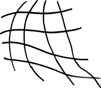 | Arbitrary or Curvilinear coordinates. We could draw any bunch of curved lines unevenly over the page in a wavy grid as long as the lines parallel to each other did not intersect. This sounds crazy, but sometimes you need to account for some distortion in a space and this type of coordinate system can be very useful as a transformation. In most cases, however, it would be a poor choice for most problems because one unit of distance is not exactly “equal” to another unit elsewhere on the page. |
| 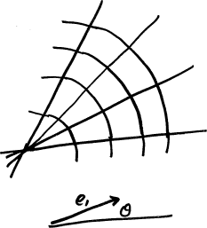 | Polar. We could use we could use an angle (from a reference direction) and a distance or angle from an origin to define where a point is, as is often done on spherical surfaces like the surface of the Earth. While useful in certain circumstances, but again suffer from the problem that distances at different areas on the page are not easily compared. |
| 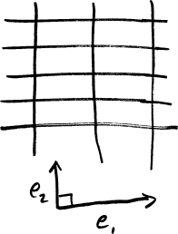 | Rectangular Coordinates. Known as the familiar “XY” coordinate system for most people, we could (and will!) use a grid of straight, parallel lines to find the coordinates of a point. Most problems that are not on highly distorted surfaces are most simply considered in this way – and even on curved surfaces, if you “zoom in” far enough, most surfaces begin to look “locally flat” and begin to resemble straight lines. |
Now that we are measuring distances evenly with a Cartesian grid, we need to choose a basis, which are essentially the directions that we reference. The choice of the directions is partly arbitrary, and partly not. For example, we can rotate the grid to be in any orientation and still get the same results. What other options do we have?
| 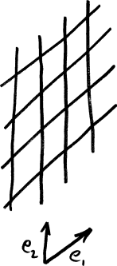 | Non-orthogonal basis. We could choose any two directions to draw our parallel lines in, which would probably our grid skewed, but we would soon notice that moving along also moves you along in some important sense. This seems like a problem, so we must add another constraint! |
| Orthogonal. If we make the two vectors orthogonal (i.e. 90 degrees to each other) we can now move independently in each direction. But what if we accidentally spaced our parallel lines different distances apart along each axis? If we do not add a constraint that both reference directions be of the same magnitude, we might accidentally measure distances along X in units of meters and distances along Y in distances of feet. | |
| 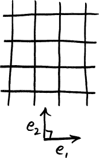 | Orthonormal. If your basis is orthogonal and are equal in magnitude (i.e. distances on each are measured in the same way), we call the basis “orthonormal”. |
One of the advantages of GA is that the exact choice of basis often does not matter – it could be rotated to any number of crazy angles or different scales – and that you can find relationships without choosing a basis at all.
Concept: Vectors
Using our new coordinate space, let us now draw two example vectors and , which are mixtures of the basis directions and . We will use these same two vectors over and over again to keep the number of symbols low.
Rather than than using matrices or vector notation, which would do more harm than good because they would obfuscate important quantities, we will instead use simple algebraic forms to express vectors. Let us define
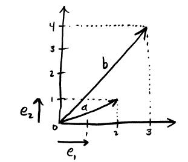
In plain english, the vector means a direction that, for each three units you move along , you must also move one unit along . Note that we cannot “add” apples and oranges ; the symbol here means something like the word “and” for the terms with different basis vectors. We can reduce expressions with , but not combine them with in a way that is further reduced than this notation.
Example: Vector Addition
What is ?
Concept: Vector Magnitude
Since trigonometry is familiar to most people, we will define the magnitude of a vector in the same way as was used the Pythagorean Theorem.
Example: Vector Magnitudes
What are the magnitudes of and ?
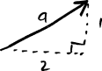
Concept: Projections and the Inner Product
Let us ask a very simple question about these vectors:
If you move along , how much do you also move along ?
The answer to this question is given by the inner product (a.k.a. dot product). It is called the “inner” product because the answer is “inside” or “along” the vector to which you are projecting.
Most people remember trigonometry pretty well, in which case the single most important thing to remember about the inner product is:
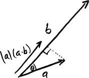
What can we discover about the consequences of this equation?
- The inner product must be commutative (), because the cosine function is symmetric (a.k.a “even”), which is the property that . All this means is that the value of will be the same whether we measure from to , which is , or from to , which is .
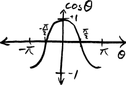
-
If , then because there is zero angle between and itself, and . We will use this property for basis vectors extensively, specifically that and .
-
Orthogonal things must have an inner product of zero, because if , , and thus . This definitely applies to our basis vectors, where we see that .
-
The inner product must be related closely to magnitudes. It is easy to prove that ; can you see why? Geometrically, we could think of this definition of magnitude as being akin to “What do we get if we move in the direction of by a number of units equal to the length of ? The magnitude of .”
It will also help to think the types of objects that enter and exit a “black box functional specification” of the inner product operation. The two “inputs” were vectors and the “output” was a scalar that measures the how much you move along one if you move along the other.
Example: Inner Product
What is using the above values of and ?
Concept: Rotations and the Outer Product
Let us ask another very simple question about these vectors:
If you start pointed in the direction of , how much do you need to rotate to point in the direction of ?
The outer product (a.k.a. wedge product) is what gives us the answer to this question.
As before, the easiest way to understand this is via trigonometry, in which case the most important fact is:
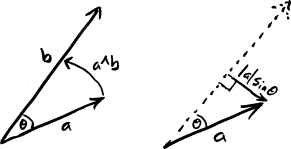
This equation has several important consequences:
- The outer product is not commutative. In fact, the outer product is a kind of multiplication that is called anti-symmetric, which means that commuting the inputs flips the sign (. This is fundamentally because is an odd function and . There are also geometric reasons for rotations to not be commutative: if we start at , we need to rotate counterclockwise to get to , but we start at , we need to rotate clockwise to get to . The choice of which reference direction you measure from matters to the sign of the answer.

- The outer product is closely related to rotation by 90 degrees, because that is the point at which is maximized and minimized. This is so important that we will right now assign the symbol to a 90 degree counterclockwise rotation. We can think of smaller or larger rotations as being multiplied by some scalar to adjust “how big” the rotation is. Under this idea, a 45 degree counterclockwise rotation would be , and a 90 degree clockwise rotation would be .
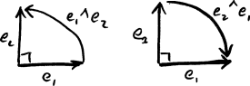 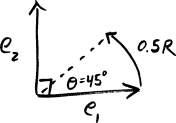
- The outer product of two orthonormal vectors must be either or . Why? Because if , then . For the basis vectors, this means that is a 90 degree counterclockwise rotation, and is a 90 degree clockwise rotation.
Once again, it will help to consider the black box specification of the outer product operation. The two “inputs” were vectors and the “output” is a scaled amount of a 90 degree rotation , which is neither a vector nor a scalar. What, exactly, is the type of this output object? After defining the geometric product, we will give it a better name.
Example: Outer Product
What is using the above values of and ?
Geometric Algebra
With the preliminaries out of the way, we can now define the geometric product and actually start doing geometric algebra!
The Geometric Product
In the same way that we introduced the inner and outer products by asking a question, we will introduce the geometric product by asking a very general question:
How do you transform into ?
Or equivilently, in terms of what we already know,
How much do you need to rescale and rotate so that it is equal to ?
The intuition that we need both a rotation and a rescaling is key to understanding the geometric product. We will write the geometric product of and as , as we would write scalar multiplication of two variables in high school algebra. We can define the geometric product as:
But in some ways, this definition puts the cart before the horse! We can discover this equation if just try to multiply and together and be very careful about how we do so. Let us explore what happens when we try to compute using high school rules of algebra (sans commutative multiplication of nonscalars).
Hmm. What should we do with the products of the unit vectors ? We can reason it out:
-
asks, “How do I transform into ?”. The answer, of course, is that nothing needs to be done! We can express this by scaling by one, the identity object, and write that . If we recall the properties of dot and wedge products for unit length vectors, and , then this assumption also agrees with our definition of the geometric product, . No rotation was needed.
-
must also equal 1, for the same reasons.
-
is asking how do I transform into ? We know that our basis vectors are orthonormal, so this must equal a 90 degree clockwise rotation . , and no rescaling is needed.
-
must thus equal , using similar reasoning.
We can now finish the simplification process.
If you compare this results to what we found earlier ( and ), we can indeed see that in this case . Now that you have the intuition, it would be a good time to prove this to yourself more generally for all .
Speaking of intuition, what does the result really mean? Does it mean that we should scale vector by 10 times and go 5 quarter turns counterclockwise to end up at ? That seems obviously incorrect! So our interpretation has led us slightly astray.
We will correct this intuition of this just a moment, but now is a good time to introduce some simplying notation that will carry us beyond just two dimensions.
Simplifying Geometric Products of Basis Vectors
For brevity, if you have fewer than 10 dimensions, it is often convenient to combine the subscripts of basis vectors. That is, with this notational convention, , or .
As for simplifying more complex geometric product expressions with orthonormal vectors, we have already learned the only two rules that we need to know:
- .
- .
That’s it! Let’s try an example to make sure this is completely obvious.
Example: Simplifying Geometric Products
Simplify the quantity .
Blades, Grades and Bivectors
Let us make a table of the different types of objects we have seen up to this point, and add a new column called grade that more or less describes the dimensionality of the object.
| Object (a.k.a. Blade ) | Examples | Basis | Grade | Relates to |
|---|---|---|---|---|
| Scalar | 1,2,3,4,5… | 1 | 0 | Magnitude |
| Vector | 1 | Direction | ||
| Bivector / Rotation | 2 | Rotation |
Common parlance is to call a bivector, and when we get to 3D, is the trivector.
The meaning of Geometric Products
Let us look one more time at the vectors and , but this time let us include all four of the basis vectors we have seen thus far: .
In general, we will call this new compound object a “Multivector”. Multivector has four components:
- An amount of “0” of a scalar quantity
- An amount of “2” in direction
- An amount of “1” in direction
- An amount of “0” is the bivector (90 degree rotation) direction
As we know by now, we cannot simplify this expression any further, because we cannot “add” apples and oranges and pears and bananas. All four objects are independent, different measurement units: the scalar values, the two basis values, and the bivector () value.
The only thing left to do in this post is to explore a few examples.
Example: On the Order of Multiplication ( vs )?
What is the relationship between and ?
where means the complex conjugate. In physical terms, this means rotating clockwise instead of counterclockwise, which is consistent with our understanding thus far.
Example: How do we move from to ?
If represents a transformation from to , how do we show it? Keeping in mind that geometric product operations are not commutative, should we pre- or post- multiply with to transform it into ?
If we pre-multiply,
Which is not equal to . Perhaps we should try post-multiplying?
Aha! That is just multiplied by a factor of 5. Where did that factor of 5 come from? Well, If we normalized and to have unit length (i.e. and ), then the factor of 5 disappears. Now is a good time to grab a sheet of paper and a pen and prove that for unit length vectors, and then read on:
If you can see that represents a pure rotation (a.k.a. a rotor), then the transform from to could be described as: “normalize , rotate by , and then scale by to reach . In math, this is quite simply several products written from left to right:
And we can see that the factor of 5 we saw earlier came from the fact that . The true way to go from to is thus to multiply by .
Conclusion
For those with prior experience in engineering and physics, you have probably noticed by now that the bivector is playing the role of the imaginary number , and that this is all just complex mathematics in another form. However, you may agree after seeing the results in higher dimensions that it is perhaps more valid to say that complex mathematics is just a special case of geometric algebra!
References
I found the following papers useful while learning about Geometric Algebra. Ordering from easiest to hardest,
- Geometric Algebra Primer, by Jaap Suter.
- Imaginary Numbers are not Real – the Geometric Algebra of Spacetime, by Stephen Gull, Anthony Lasenby, and Chris Doran.
- A Survey of Geometric Algebra and Geometric Calculus, by Alan Macdonald.
- Oersted Medal Lecture 2002: Reforming the Mathematical Language of Physics by David Hestenes.
- An Introduction to Geometric Algebra and Calculus, by Alan Bromborsky.
- Geometric Algebra, by Eric Chisolm.
- Spacetime Physics with Geometric Algebra 1, by David Hestenes.